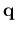
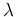
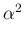
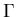

Next: 4 Using PHonon
Up: 3 Installation
Previous: 3 Installation
Contents
Typing make ph from the root QUANTUM ESPRESSO directory, or make
from the PHonon directory, produces the following codes:
- PH/ph.x: Calculates phonon frequencies and displacement patterns,
dielectric tensors, effective charges (uses data produced by pw.x).
- PH/dynmat.x: applies various kinds of Acoustic Sum Rule (ASR),
calculates LO-TO splitting at
 = 0 in insulators, IR and Raman
cross sections (if the coefficients have been properly calculated),
from the dynamical matrix produced by ph.x
- PH/q2r.x: calculates Interatomic Force Constants (IFC) in real space
from dynamical matrices produced by ph.x on a regular q-grid
- PH/matdyn.x: produces phonon frequencies at a generic wave vector
using the IFC file calculated by q2r.x; may also calculate phonon DOS,
the electron-phonon coefficient , the function
F(
 )
)
- PH/lambda.x: also calculates and
F(),
plus Tc for superconductivity using the McMillan formula
- PH/alpha2f.x: also calculates and
F().
It is used together with the optimized tetrahedron method
(
occupations="tetrahedra_opt" in pw.x) and shifted q-grid
(lshiftq=.true. in ph.x).
- PH/fqha.x: a simple code to calculate vibrational entropy with
the quasi-harmonic approximation
- Gamma/phcg.x:
a version of ph.x that calculates phonons at
= 0 using
conjugate-gradient minimization of the density functional expanded to
second-order. Only the  (
 = 0) point is used for
Brillouin zone integration. It is faster and takes less memory than
ph.x, but does not support spin polarization, USPP and PAW.
= 0) point is used for
Brillouin zone integration. It is faster and takes less memory than
ph.x, but does not support spin polarization, USPP and PAW.
Links to the main QUANTUM ESPRESSO bin/ directory are automatically generated.
Next: 4 Using PHonon
Up: 3 Installation
Previous: 3 Installation
Contents